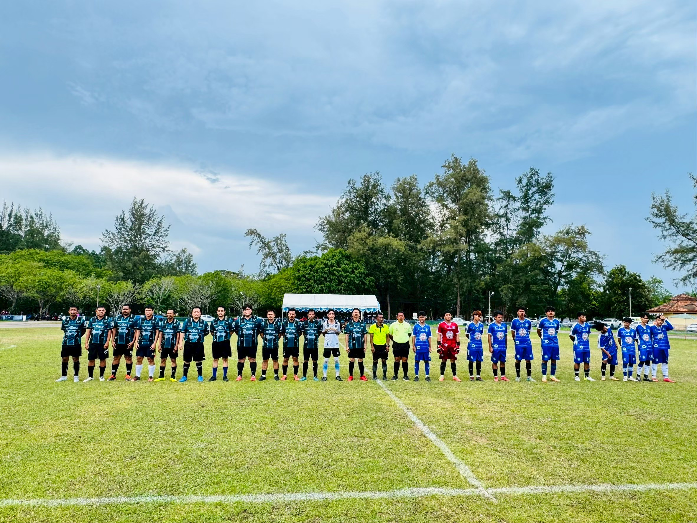

CONTENT UNIVERSE
DATABASEขนาดข้อมูลแต่ละหมวด
จำนวนรายการจริงจากตารางหลัก
มองเห็นโครงสร้างกีฬา ความเหลื่อมล้ำเชิงพื้นที่ ความคืบหน้าตามแผน และความต้องการของผู้ใช้ จากหลักฐานในฐานข้อมูลจริง
ข้อมูลที่สร้างและแก้ไขไม่เกิน 12 ก.ค. 2569
กรองแผนที่ตามจังหวัด หรือค้นหาจังหวัดเพื่อเปิด Province Profile และวิเคราะห์โครงสร้างกีฬาเชิงพื้นที่ทันที
ระบบเชื่อมข้อมูลผลรายปีครบทั้ง 46 KPI แล้ว แต่สูตร หน่วย เกณฑ์ และหน่วยงานรับผิดชอบยังต้องตรวจแยกกันก่อนสรุปผลสัมฤทธิ์
เริ่มจากขนาดข้อมูลและความครอบคลุม ก่อนพิจารณาว่าพื้นที่ใดมีความพร้อมหรือยังมีช่องว่าง
จำนวนรายการจริงจากตารางหลัก
GA4 และ Internal Counter
ครอบคลุม 100% ของจังหวัดทั้งหมด · กราฟแสดงจำนวนจริงรายจังหวัด
เปรียบเทียบจำนวนจริงตามชนิดกีฬา
เปรียบเทียบจังหวัดแบบตัวต่อตัว และค้นหาพื้นที่ที่มีสนามมากแต่กิจกรรมหรือศูนย์สนับสนุนน้อย
มุมขวาล่างคือจังหวัดที่มีสนามมาก แต่กิจกรรมต่ำกว่าค่ากลาง
คำนวณจากสนาม กิจกรรม และศูนย์สนับสนุนในฐานข้อมูล
เปรียบเทียบจำนวนสนาม กิจกรรม ผลการแข่งขัน นักกีฬา และบุคลากร โดยไม่สร้างความสัมพันธ์ที่ไม่มีอยู่จริงในฐานข้อมูล
แหล่งข้อมูล: stadiums, events, competition_results, athletes และ sport_personal · คลิกแถวกีฬาเพื่อเปิดหน้าที่เกี่ยวข้อง
เส้นเวลาเปรียบเทียบการเพิ่มข้อมูลสนามและกิจกรรม พร้อมจุดสูงสุดและวันที่อัปเดตล่าสุด
กำลังโหลดช่วงข้อมูล
คุณภาพข้อมูลแต่ละโดเมนมีความต่างกัน โดยเฉพาะข้อมูลจังหวัดและเพศของนักกีฬา
แต่ละแถวแสดงจำนวนจริง: มีข้อมูลครบ / ขาดข้อมูล / จำนวนทั้งหมด โดยไม่ใช้เปอร์เซ็นต์เป็นตัวเลขหลัก

ตรวจจำนวนพิกัดจริงได้ใน Scorecard ขณะที่ 19,488 แห่งไม่ระบุ Environment
เลือกตาราง กรองข้อมูล และตรวจสอบหลักฐานที่อยู่เบื้องหลังตัวเลขบน Dashboard
กำลังประมวลผลข้อมูลกีฬาในระดับจังหวัด
เปรียบเทียบความพร้อมของสนาม กิจกรรม ศูนย์สนับสนุน และการแข่งขันภายในจังหวัดจากข้อมูลจริงก่อน cutoff
| อันดับ | อำเภอ | สนาม | กิจกรรม | กิจกรรมต่อ 100 สนาม | ศูนย์สนับสนุน | การแข่งขัน | ชนิดกีฬา | กีฬาหลัก | สถานะ |
|---|
จำนวนสนามและกิจกรรมตามชนิดกีฬา
ศูนย์ฝึกเทียบศูนย์วิทยาศาสตร์กีฬา
นับจากวันเริ่มกิจกรรมที่บันทึกในจังหวัด · ชี้จุดเพื่อดูรายการย่อ หรือคลิกเพื่อดูรายละเอียด
แสดงกิจกรรมเฉพาะจังหวัดที่เลือกตลอดช่วงวันเริ่ม–สิ้นสุด
แยกผลของการแข่งขันที่จัดในจังหวัดออกจากผลงานที่ผู้แทนจังหวัดได้รับ
แสดงจำนวนจริงของรายการที่มีและไม่มีพิกัดใช้งานได้
รายการแข่งขันที่ระบุจังหวัดตรงกับพื้นที่นี้
เลือกดูรายละเอียดแต่ละชุดข้อมูล โดยคง filter จังหวัดไว้ตลอด
วิเคราะห์ความครอบคลุม พื้นที่ ชนิดกีฬา เจ้าของ และคุณภาพข้อมูลสถานที่
ดัชนีเปรียบเทียบระดับจังหวัด ไม่ใช่อัตราใช้สนามจริง เพราะกิจกรรมยังไม่มี Foreign Key ถึงสนาม
แยกอดีต กำลังจัด และกิจกรรมในอนาคต พร้อมวิเคราะห์พื้นที่ กีฬา และระดับงาน
แสดงกิจกรรมตลอดช่วงวันเริ่ม–สิ้นสุด · เลือกเดือนและกดวันที่เพื่อดูรายละเอียด
ช่วงเวลาจัดการแข่งขัน ระดับ กีฬา ผู้ชนะ และความครบถ้วนของผลรางวัล
ชี้แท่งเพื่อดูชื่อรายการทั้งหมดในเดือนนั้น
ทุกขั้นนับเป็นจำนวน “การแข่งขัน” หน่วยเดียวกัน โดยรวมแถวผลตาม competition_id ก่อน
เปรียบเทียบความครอบคลุมและความพร้อมของโครงสร้างพื้นฐานสนับสนุนนักกีฬา
สนาม ศูนย์ฝึก และศูนย์วิทยาศาสตร์ แสดงเป็นจำนวนจริงรายจังหวัด
คะแนน 0–100 จากสนาม 35% กิจกรรม 35% และช่องว่างศูนย์เทียบกับความต้องการ 30%
คะแนนใช้ Min–Max normalization ภายใน 77 จังหวัด · ใช้เพื่อจัดลำดับตรวจสอบ ไม่ใช่ข้อสรุปด้านงบประมาณ
สำรวจชนิดกีฬา ระดับ การกระจายตัว และช่องว่างคุณภาพข้อมูลบุคคล
ข้อมูลนักกีฬา 94 จาก 97 รายไม่มีจังหวัดที่ใช้งานได้ และ 84.54% ไม่ระบุเพศ
เปรียบเทียบเฉพาะชนิดกีฬาที่ระบุได้ ไม่ใช้จังหวัดที่ข้อมูลขาดในการจัดอันดับ
ข้อมูล GA4 จริงช่วง 1 มกราคม 2025 ถึง 13 กรกฎาคม 2026 รวมกับยอดชมเนื้อหาภายในระบบ
เปรียบเทียบ Impression, Click และ CTR เพื่อหาเนื้อหาที่ควรปรับปรุง
เชื่อมแผนหลัก ประเด็นการพัฒนา ตัวชี้วัด 46 รายการ และข้อมูลผลรายปีจากฐานข้อมูลจริง
ขนาดของแต่ละส่วนแทนจำนวน KPI คลิกเพื่อกรองรายการใน KPI Explorer
โครงสร้าง: wp_action_plan_master → wp_action_plan_minor · ใช้ชื่อหมวดจาก wp_action_plan_minor_topic โดยจับคู่ csvId → wp_action_plan_outcome
นับจำนวนจริงของ KPI ที่มีข้อมูลสำคัญ ไม่ใช้คะแนนเปอร์เซ็นต์รวม
เปรียบเทียบจำนวนตัวชี้วัดกับปริมาณข้อมูลที่บันทึกจริง
เลือกประเด็น KPI และค่าที่ต้องการดู โดยแสดงชื่อ field จริงเพื่อป้องกันการตีความเกินข้อมูล
Heatmap แสดงความพร้อมของข้อมูลรายปีแยกตามประเด็น ไม่ได้หมายถึงผลสัมฤทธิ์ของแผน
แสดงทุก field จากตารางต้นทาง พร้อมเลื่อนแนวนอนสำหรับตารางที่มีหลายคอลัมน์
สำรวจโครงสร้างจาก SQL source snapshot · จำนวน Rows ในหน้านี้เป็น metadata ของไฟล์ต้นทาง ส่วนกราฟและตารางวิเคราะห์ใช้ cutoff 12 ก.ค. 2569
แสดงเฉพาะชุดข้อมูลที่ผ่านการคัดฟิลด์สำหรับเผยแพร่ โดยไม่รวมรหัสผ่าน Token อีเมล และข้อมูลอ่อนไหว
ตารางด้านล่างแสดง Schema และจำนวนแถวเท่านั้น ตารางที่ไม่ได้ Export จะไม่แสดงข้อมูลรายแถว
เปรียบเทียบขนาดโครงสร้างกับจำนวนแถว เพื่อเห็น Domain ที่ใหญ่แต่มีตารางน้อยหรือกระจายหลายตาราง
| Table | Domain | Rows | Fields | PK |
|---|